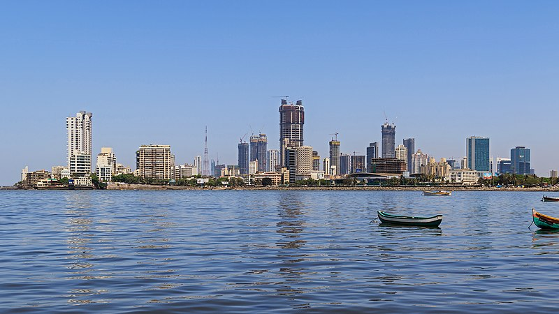
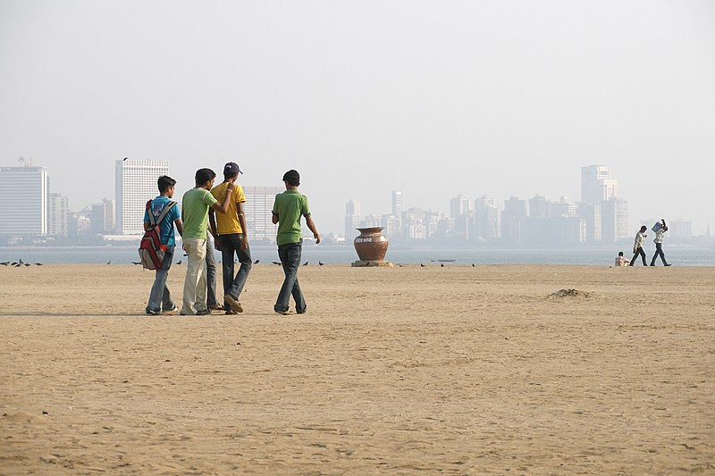

Ville de Mumbai
Mumbai, joyau de l'Inde
Mumbai, anciennement connue sous le nom de Bombay, est une métropole animée située sur la côte ouest de l'Inde. Capitale économique et financière du pays, Mumbai est une ville où se rencontrent tradition et modernité, offrant une expérience urbaine riche et diversifiée.
Au cœur de Mumbai se trouve le quartier historique de Colaba, où se dressent des monuments emblématiques tels que la Porte de l'Inde, un arc de triomphe majestueux construit pour commémorer la visite du roi George V et de la reine Mary en 1911. À proximité, le Taj Mahal Palace, un hôtel de renommée mondiale, incarne l'élégance et le luxe.
La ville est également réputée pour son quartier des affaires de Nariman Point, où se concentrent les gratte-ciel étincelants, les sièges sociaux des grandes entreprises et les institutions financières renommées. Mumbai est le cœur économique de l'Inde, attirant des entrepreneurs, des investisseurs et des professionnels du monde entier.
Mais Mumbai ne se résume pas seulement à ses gratte-ciel et à son effervescence économique. Les ruelles étroites et animées de ses quartiers tels que Dharavi révèlent l'âme vibrante de la ville. Dharavi, l'un des plus grands bidonvilles d'Asie, est également un centre d'activité économique où se trouvent des industries artisanales, des ateliers de poterie, des teintureries et des boutiques d'artisanat.
La cuisine de Mumbai est une explosion de saveurs et de diversité, allant des délices de rue tels que les vada pav et les pav bhaji aux plats traditionnels comme le biryani et le seafood thali. Les restaurants étoilés au guide Michelin côtoient les échoppes modestes, offrant une expérience culinaire pour tous les palais et tous les budgets.

Mumbai est une ville où se mêlent les contrastes, où l'on trouve des temples anciens et des discothèques branchées, des marchés colorés et des centres commerciaux ultramodernes. C'est une ville qui ne dort jamais, où chaque coin de rue raconte une histoire et chaque visite est une aventure.
Découvrir plus sur l'Asie